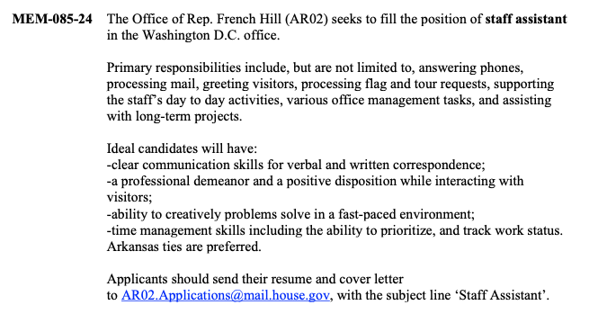

As a former Hill reporter, some of the best never-published stories revolved around the treatment (usually, mistreatment) of congressional staff. The people who actually make Congress work mostly don’t have a lot of power and are subject to the demands, schedules and whims of the lawmakers who employ them. It’s also tough to get a real understanding of how lawmakers actually understand and value the work that their staff does. Many of them are elected for reasons unrelated to their managerial skills.
Aside from whispered conversations, it’s tough to get much insight into how lawmakers understand what their staff should do. That’s why the House of Representatives job listings matter. They’re one of the few public signals we get about how members think about the staff they hire. But the problem? These listings are scattered across weekly bulletins that arrive by email, buried in text and formatted just inconsistently enough to make structured analysis a pain.
Starting Out as a PDF
Each week, the House publishes a bulletin with job openings (and also internships). Some are for committee staff, some are for member offices, and they cover everything from entry-level staff assistants to senior policy advisors. Not every office posts openings there, but a good number do. The listings follow a loose format, but with plenty of quirks:
- Some offices spell out duties in detail; others are vague.
- Pay transparency is rare. A few offices mention salary, but most listings leave job seekers guessing.
- Different hiring practices. Some offices want a resume and cover letter, others use an internal portal, and a few ask applicants to email a generic address.
Here’s a pretty typical example:
If you want to track hiring trends, analyze the kinds of skills offices value, or even see which members are expanding their staff, this blob of text isn’t good enough. You need structured data. - not just a weekly dump of text. That’s where the Python library llm, made by the enthusiastically productive Simon Willison, comes in handy.
Better Structure Through LLM
To make sense of the job postings, I first dumped out the text of each PDF using the pdftotext command-line utility. It’s a great tool that should be in every journalist’s toolbox. An example of the exported text is here Then I consulted my friendly neighborhood Large Language Model (Claude 3.5 in this case) to assist me in writing Python code using the llm library that would parse the job listings and create structured data. I wanted to do a couple of things, but the goal was to have a process that:
- Splits the raw text into job listings using MEM-XXX-YY pattern.
- Runs each listing through an LLM to extract structured fields.
- Outputs the data into JSON for analysis.
Splitting the Text Into Job Listings
The job bulletins are lengthy, unstructured text files, and some of them would exceed the input limits of an LLM. The first step was to break them into individual listings using regex-based chunking, using the MEM-XXX-YY pattern.
import re
from typing import List
def split_into_job_chunks(text: str) -> List[str]:
"""Split text into chunks based on MEM- pattern while keeping each job listing intact."""
# Split on MEM- pattern but keep the delimiter
chunks = re.split(r'(?=MEM-)', text)[1:]
# Remove empty chunks and strip whitespace
return [chunk.strip() for chunk in chunks if chunk.strip()]This ensured that each MEM-XXX-YY entry remained intact, preserving all details associated with each job.
Extracting Key Fields Using Google Gemini
Once I had clean job chunks, I passed them through a structured extraction process using Google Gemini’s Flash 2.0 model. The llm library makes this very easy, thanks to a plugin that supports Gemini models. Originally I wrote the prompt to process each listing, but then I asked Gemini to improve my prompt for me. It absolutely did, adding not only some formatting instructions but also suggesting I pull out information about equal opportunity hiring statements in the listings:
command = f"""cat temp_chunk.txt | llm --system $'You are an expert in parsing congressional job listings from text files split into chunks. Extract job listings into a structured JSON array where each listing is an object with consistent fields. Handle the following formatting requirements: \\
1. Convert any non-ASCII characters \\(including smartquotes, em-dashes, etc.\\) to their closest ASCII equivalent \\
2. Normalize bullet points and list formatting into consistent structures \\
3. Maintain hierarchical relationships in nested lists \\
4. Preserve paragraph breaks in description fields \\
5. Format all dates in ISO 8601 format \\(YYYY-MM-DD\\)' \\
-m gemini-2.0-flash-exp -o json_object 1 \\
$'Create a JSON array containing objects for each job listing with the following required fields: \\
- id: Job ID in format "MEM-XXX-YY", where XXX is the number from the listing \\(do not use literally XXX\\). do not carry over IDs from one chunk to the next. \\
- position_title: Full position title \\
- office: Congressional office or committee name - do not use placeholders \\
- location: Primary work location \\
- posting_date: Date from filename \\(format: YYYY-MM-DD\\) \\
- description: Full job description \\
- responsibilities: Array of responsibilities \\
- qualifications: Array of required qualifications \\
- how_to_apply: Application instructions \\
- salary_info: Salary information if provided \\(use null if not specified\\) \\
- contact: Contact information for applications \\
- equal_opportunity: Equal opportunity statement if present \\(use null if not specified\\) \\
Do not process introductory boilerplate language or subscribe/unsubscribe sections as job listings. Format all text fields as UTF-8 strings, convert bullet points to array elements, and maintain paragraph structure in longer text fields. Remove any formatting characters while preserving the semantic structure of the content.'"""The prompt provides an example of how I wanted the JSON to look, but Simon has actually made that part better today with his JSON schemas option for llm. I will be using that going forward.
Oh, and cost? I’m cheap, so I ran this using Gemini’s 1,500 daily API calls on the free tier. Took me a few days. $0.
And Now You Have the Data
Running that script produced structured JSON data of the PDF version I showed above that looks like this:
{
"id": "MEM-085-24",
"position_title": "Staff Assistant",
"office": "Rep. French Hill (AR02)",
"location": "Washington D.C.",
"posting_date": "2024-03-04",
"description": "The Office of Rep. French Hill (AR02) seeks to fill the position of staff assistant in the Washington D.C. office.\nPrimary responsibilities include, but are not limited to, answering phones, processing mail, greeting visitors, processing flag and tour requests, supporting the staff’s day to day activities, various office management tasks, and assisting with long-term projects.\nArkansas ties are preferred.",
"responsibilities": [
"Answering phones",
"Processing mail",
"Greeting visitors",
"Processing flag and tour requests",
"Supporting the staff’s day to day activities",
"Various office management tasks",
"Assisting with long-term projects"
],
"qualifications": [
"Clear communication skills for verbal and written correspondence",
"A professional demeanor and a positive disposition while interacting with visitors",
"Ability to creatively problems solve in a fast-paced environment",
"Time management skills including the ability to prioritize, and track work status"
],
"how_to_apply": "Applicants should send their resume and cover letter to AR02.Applications@mail.house.gov, with the subject line ‘Staff Assistant’.",
"salary_info": null,
"contact": "AR02.Applications@mail.house.gov",
"equal_opportunity": null
}There’s a lot of stuff in here, and most of it is still long-ish text. But, now I can treat sections of the job listings individually rather than as a whole. That’s important for several reasons.
What This Data Can Tell Us
With this structured data, I can analyze trends in congressional hiring, asking questions such as:
- Which roles are in demand?
- Do members prioritize legislative work or communications?
- How transparent are offices about pay?
- How have the descriptions of roles changed over time?
For job seekers, structured job listings mean better searchability — no more combing through PDFs just to find which offices are hiring. For Hill watchers, these postings offer a unique way to track how members think about staffing. Members might not put out press releases about what kind of staff they value most, but their job postings help tell the story. And with the right tools, we can read between the lines.
The next steps here are to collect all of these listings-as-data, remove duplicates (because many of the listings are posted for weeks) and then make it easier to compare and contrast them. Luckily, llm and other libraries from Simon will help with all of that, and in particular I’m looking forward to using llm’s embeddings functionality to help surface similarities in listings and their features. More to come on that. In the meantime, you can find the original PDFs, text versions and JSON files at this repository. If you want to collaborate on this work or have questions, I’d love to hear from you!